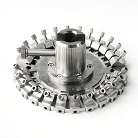
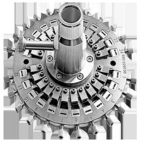
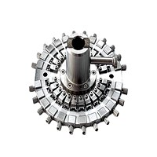
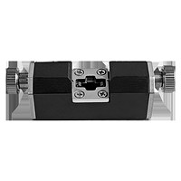

Polishing Fixtures
Precision CNC-Machined Fiber Polishing Fixtures
Our comprehensive range of polishing fixtures covers all standard and specialty fiber connector types. Manufactured using high-precision CNC machining with premium materials, they deliver exceptional flatness, concentricity, and long service life — maximizing your polishing quality and reducing per-connector costs.
Fixture Categories
Complete fixture solutions for every connector type and polishing machine
SC/APC Fixtures
High-precision fixtures for SC and SC/APC connectors. Available in various port counts (4, 8, 12, 16, 24) for different throughput requirements. Flat and angled polishing options.
LC/APC Fixtures
Designed for the increasingly popular LC form factor. Compact design maximizes connector density per fixture while maintaining precise ferrule positioning.
FC/ST Fixtures
Robust fixtures for FC and ST connector polishing. Precision bore holes ensure consistent ferrule alignment and even pressure distribution across all connectors.
MTP/MPO Fixtures
Specialized fixtures for multi-fiber MTP/MPO connectors. Engineered to handle the tight tolerances required for multi-fiber endface polishing.
Custom Fixtures
Custom-designed fixtures for specialty connectors, non-standard geometries, or unique production requirements. Our engineering team works with you from concept to delivery.
Consumables & Accessories
Complete range of polishing films, pads, rubber mats, and accessories. Original Bulls Precision consumables ensure optimal results with our equipment.
Why Choose Our Fixtures
| Material | Premium stainless steel / aluminum alloy (application-dependent) |
| Manufacturing | 5-axis CNC precision machining |
| Bore Tolerance | ± 0.5 μm |
| Flatness | < 1 μm across polishing surface |
| Surface Finish | Mirror polished contact surfaces |
| Service Life | 10,000+ polishing cycles (typical) |
| Connector Types | SC, LC, FC, ST, MU, E2000, MTP/MPO, DIN, and more |
| Polish Types | PC, UPC, APC (8°) |
| Port Counts | 4, 6, 8, 12, 16, 24 (varies by type) |
| Compatibility | Bulls Precision machines and most major brands |
| Quality Control | 100% inspection with CMM verification |
| Custom Options | Special dimensions, materials, port counts, and branding available |
Universal Compatibility
Designed to work seamlessly with our machines and most industry-standard equipment
Bulls Precision Machines
Perfectly matched to all Bulls Precision polishing machines for optimal performance.
Cross-Compatible
Also compatible with polishing machines from other major manufacturers worldwide.
Custom Engineering
Need a non-standard fixture? Our team can design and manufacture to your exact specifications.
Global Fast Delivery
Standard fixtures ship within 3-5 business days. Custom fixtures typically within 2-3 weeks.


Need Polishing Fixtures?
Whether standard or custom, we have the right fixture for your application. Contact us for pricing and lead times.